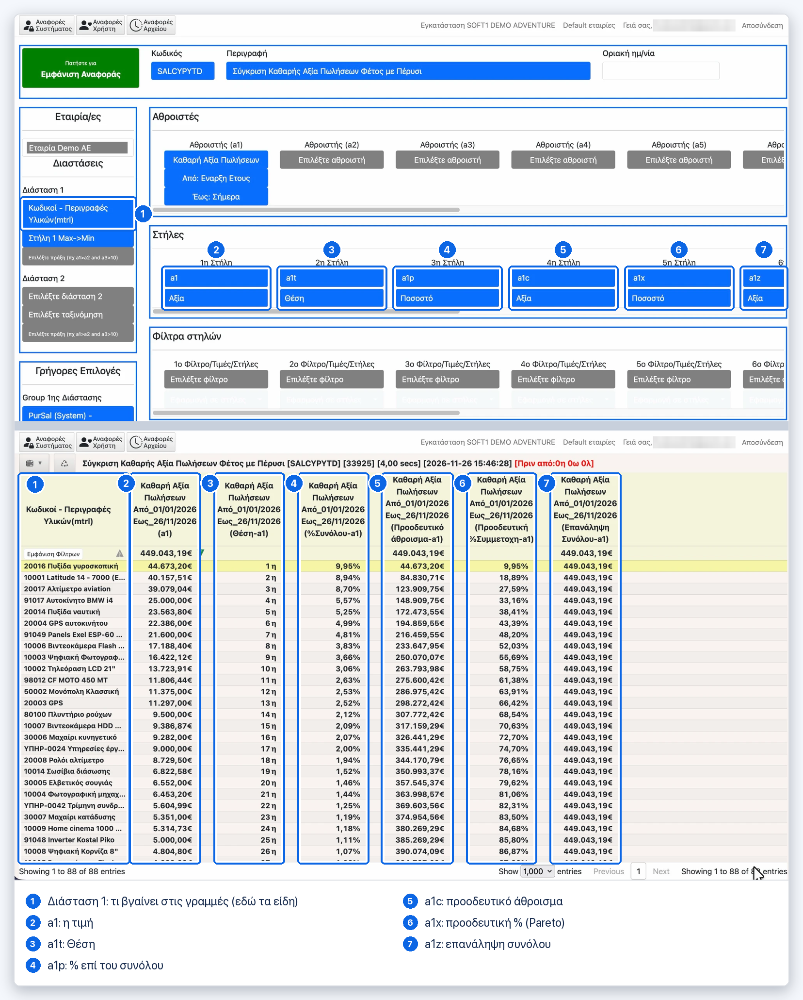

Ειδικοί αθροιστές: Θέση, Ποσοστό, Pareto
Με ένα γράμμα μετά τον αθροιστή, μια στήλη δείχνει κατάταξη, ποσοστό επί του συνόλου, προοδευτικό άθροισμα ή ανάλυση Pareto 80-20.
Τι κάνει#
Σε κάθε στήλη γράφετε ποιον αθροιστή θα δείχνει, π.χ. a1. Αν προσθέσετε ένα γράμμα, παίρνετε έναν ειδικό υπολογισμό πάνω στον ίδιο αθροιστή:
| Γράφετε | Τι δείχνει | Η επικεφαλίδα γράφει |
|---|---|---|
a1 |
Την τιμή | … (a1) |
a1t |
Θέση: 1 για τη μεγαλύτερη τιμή, 2 για την επόμενη κ.λπ. | … (Θέση-a1) |
a1p |
Ποσοστό επί του συνόλου της στήλης | … (%Συνόλου-a1) |
a1c |
Προοδευτικό άθροισμα, από την πρώτη γραμμή έως την τρέχουσα | … (Προοδευτικό άθροισμα-a1) |
a1x |
Προοδευτική ποσοστιαία συμμετοχή: το προοδευτικό άθροισμα ως % του συνόλου (Pareto) | … (Προοδευτική %Συμμετοχη-a1) |
a1z |
Επανάληψη Συνόλου: το σύνολο της στήλης σε κάθε γραμμή | … (Επανάληψη Συνόλου-a1) |
Το ίδιο ισχύει για όλους τους αθροιστές: a2t, a3p, a0x κ.λπ.
Πότε το χρησιμοποιώ#
- Αλλαγή κατάταξης πελατών: a1 = τζίρος φέτος, a2 = τζίρος πέρυσι. Στήλες
a1tκαιa2t. Βλέπετε ότι ένας πελάτης έπεσε από την 5η στην 8η θέση. - Pareto 80-20: ταξινόμηση Στήλη 1 Max->Min και στήλη
a1x. Οι πελάτες μέχρι το 80% είναι αυτοί που φέρνουν τα 4/5 του τζίρου. - Μερίδιο κατηγορίας: διάσταση εμπορική κατηγορία, στήλη
a1p. Βλέπετε τι ποσοστό των πωλήσεων είναι κάθε κατηγορία.
Βήματα#
- Στις ρυθμίσεις, στη Διάσταση 1 διαλέξτε τι θα βγαίνει στις γραμμές (π.χ. Κωδικοί - Περιγραφές Υλικών(mtrl) για τα είδη).
- Βάλτε τον αθροιστή σε μία θέση (π.χ. Αθροιστής (a1)) με την περίοδό του.
- Στην ενότητα Στήλες, στο πεδίο Επιλέξτε αθροιστή/πράξη μιας στήλης, γράψτε π.χ.
a1t. - Από τη λίστα κάτω από το πεδίο διαλέξτε μορφή: Θέση για
t, Ποσοστό γιαpκαιx, Αξία γιαcκαιz. - Για Pareto και προοδευτικά, ορίστε ταξινόμηση στη διάσταση (π.χ. Στήλη 1 Max->Min), ώστε η σειρά να έχει νόημα.
- Πατήστε Εμφάνιση Αναφοράς.

Συμβουλές και συχνά λάθη#
- Η Θέση μετρά από τη μεγαλύτερη τιμή. Ο πελάτης με τον μεγαλύτερο τζίρο είναι 1ος.
- Για τη διαφορά θέσεων γράψτε σε άλλη στήλη
a2t-a1tκαι διαλέξτε μορφή Διαφορά Θέσεων. Θετικός αριθμός σημαίνει ότι ο πελάτης ανέβηκε. - Τα προοδευτικά ακολουθούν την ταξινόμηση της διάστασης. Αν η σειρά είναι αλφαβητική, το Pareto δεν βγάζει νόημα.
- Με 2η διάσταση, Θέση, ποσοστά και προοδευτικά υπολογίζονται και μέσα σε κάθε ομάδα της 1ης. Π.χ. η θέση κάθε πελάτη μέσα στους πελάτες του πωλητή του.
- Στη γραμμή «Σύνολα» δεν εμφανίζεται άθροισμα για Θέση, Ποσοστό και Προοδευτική %, γιατί δεν θα είχε νόημα.
- Τα ελληνικά γράμματα (α, τ, π, χ) μετατρέπονται αυτόματα στα σωστά λατινικά.
Σας βοήθησε αυτό το άρθρο;